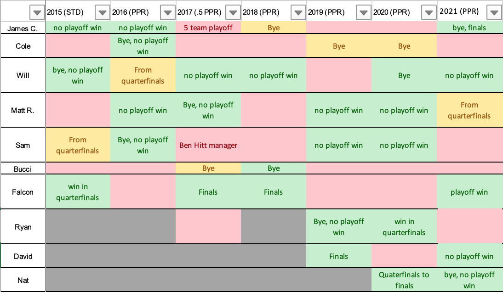
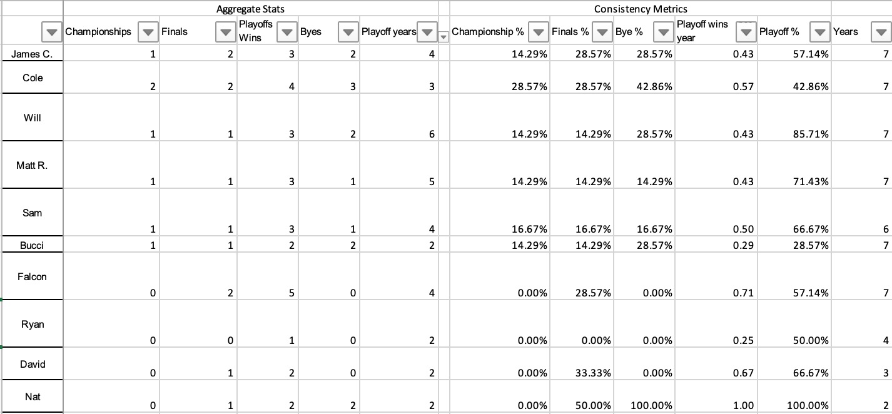

Cads Kiper here! The most accurate fantasy analyst in the game. I'm honored to have the opprtunity to provide coverage for the
prestigious Milton Academy fantasy league. I'm looking forward to providing in-depth coverage of all the fantasy
managers before the draft and evaluating them throughout the year.
For this upcoming season, I will be bringing back popular segments from last year, such as the mock drafts and power rankings.
Unlike last year I won't be doing the power rankings on a (somewhat) weeky basis. I will have two during the preseason,
3 mid season updates, and a playoff break down. Other articles include Franchise Power Rankings and
the QB Round-up (predicting who will take which QB)
Below is a brief history of all the playoff finishes of active members:

Yellow shows the team that won the championship that year, green shows who made the playoffs and red shows who missed the playoffs. I will reference this chart along with other stats in the franchise power rankings.

Quick note of the stats: the Ben Hitt manager year was NOT counted against Sam. The 5 team playoff miss was counted against James.